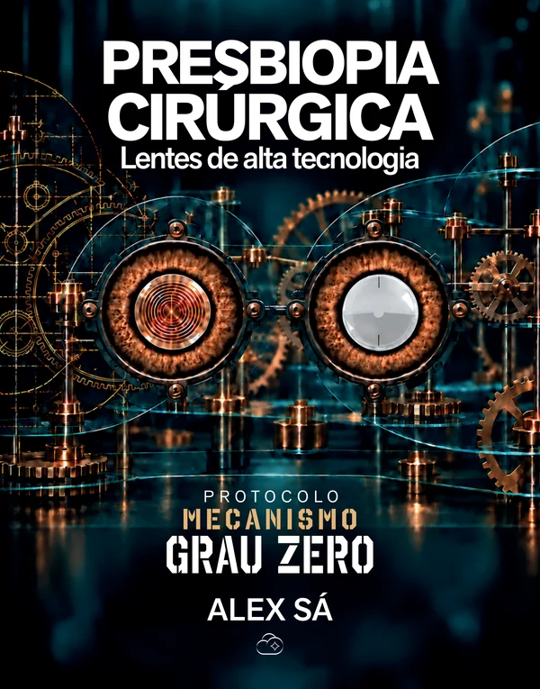
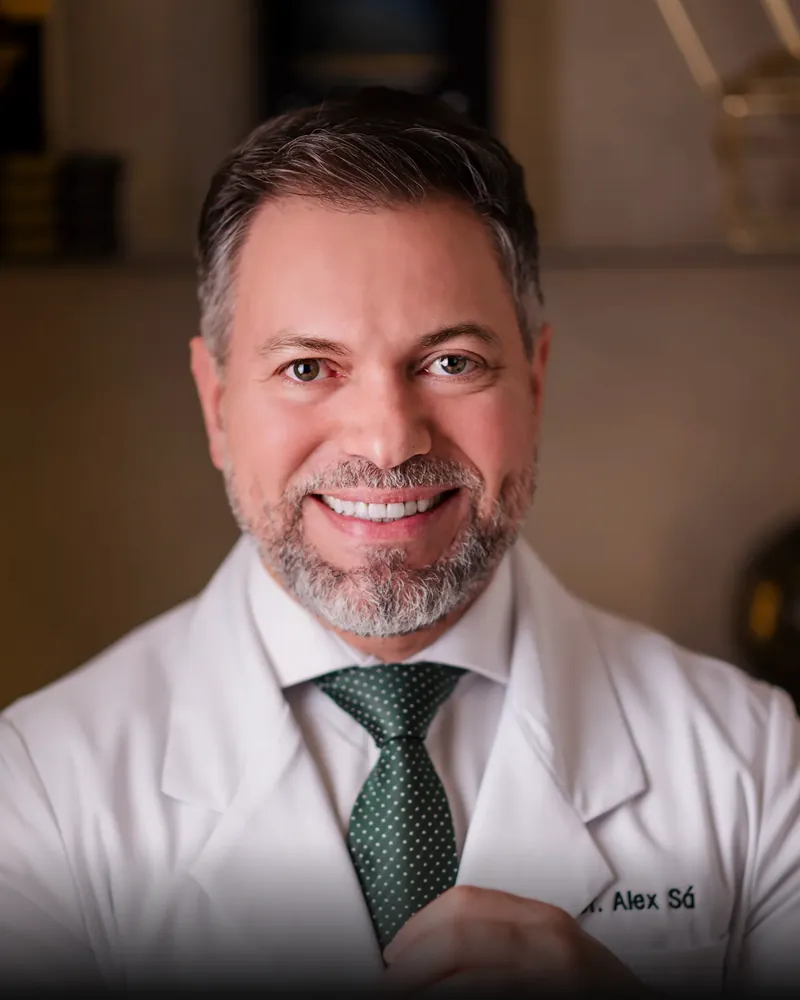

Indicar
7critérios
para indicar
Cada paciente é um ponto de partida.
Antes da escolha da lente, vem a compreensão do paciente. O protocolo organiza a indicação considerando suas particularidades e os dados da avaliação.
Novo livro do Dr. Alex Sá
Não simplesmente escolher uma lente, mas construir uma estratégia visual personalizada para cada olho e cada paciente.
Mais de 600 páginas.13 capítulos, dos fundamentos ópticos aos 10 casos clínicos.

Prefácio de Renato Ambrósio Jr. · 39 colaboradores
R$ 1.050Até 6x de R$ 175 sem juros
Pré-venda: 45 dias
Frete calculado e cobrado à parte após a compra
Com pacientes cada vez mais ativos, exigentes e conectados, já não basta alcançar uma boa acuidade visual: é preciso buscar qualidade óptica, alcance visual e independência dos óculos, respeitando as particularidades de cada paciente.
Em Presbiopia Cirúrgica, o Dr. Alex Sá apresenta os fundamentos que orientam a escolha e a utilização das lentes intraoculares de alta tecnologia, conectando óptica cirúrgica, exames diagnósticos, biometria, aberrometria, topografia, tomografia e diferentes tecnologias de LIOs a uma lógica de decisão clínica.
Talvez um dos maiores méritos deste livro seja exatamente este: procurar simplificar sem empobrecer.
Protocolo Mecanismo Grau Zero
Exames, rotina e expectativas se encontram em um planejamento individualizado. Conheça como a obra conecta indicação, customização e prática clínica.
Indicar
7critérios
para indicar
Antes da escolha da lente, vem a compreensão do paciente. O protocolo organiza a indicação considerando suas particularidades e os dados da avaliação.
Customizar
7passos
para customizar
Exames, rotina e expectativas orientam a construção do planejamento. Os passos de customização articulam alcance visual e qualidade óptica.
Aplicar
10casos
clínicos
Da análise dos exames à aplicação do protocolo, os casos clínicos permitem acompanhar as decisões discutidas ao longo da obra.
Conheça as páginas do livroIlustrações conceituais do raciocínio de planejamento.
O sumário da obra, com as cinco partes, os 13 capítulos, os tópicos de estudo e a página de cada conteúdo.
Parte Ip. 27
Parte IIp. 44
Parte IIIp. 144
Parte IVp. 290
Parte Vp. 393
Três páginas da obra, dos fundamentos ao protocolo. Selecione para ampliar.
p. 100Cap. 4 · Aberrometria
p. 218Cap. 6 · Topografia e tomografia
p. 425Cap. 12 · 7 critérios e 7 passos

CRM-AM 7516 · RQE 3514
Cirurgião oftalmologista, especialista em catarata e cirurgia refrativa, à frente da Clínica Dr. Alex Sá, em Manaus. Criador do Protocolo Mecanismo Grau Zero e fundador do Club OftalmoBlack.
39colaboradores no livro, em capítulos, depoimentos e discussões clínicas.
“Meu objetivo é ajudar o colega a planejar com mais clareza, reconhecer limites e avaliar o resultado pelo que ele representa na vida do paciente.”
Livro impresso · pré-venda
R$ 1.050
Pré-venda com prazo de 45 dias. Você paga o livro pela Greenn. Após a compra, nossa equipe confirma o endereço e calcula o frete manualmente pelo WhatsApp.
Garantir meu exemplarO frete não está incluído neste pagamento. O valor será informado e cobrado separadamente pela equipe antes do envio. Atendimento: (11) 99343-6267.
Pré-venda com prazo de 45 dias. A equipe OftalmoBlack acompanha seu pedido pelo WhatsApp informado no checkout.
Sim. Neste checkout você paga somente o livro. Após a compra, nossa equipe confirma seu endereço, calcula o frete manualmente e informa o valor pelo WhatsApp comercial (11) 99343-6267. O frete é pago separadamente antes do envio. Na página após a compra, você encontra o botão para falar com a equipe.
Pix ou cartão de crédito em até 6x de R$ 175 sem juros, no checkout seguro da Greenn.
Para profissionais que buscam aprofundar seus conhecimentos. Para quem valoriza a precisão na indicação de lentes intraoculares. Para quem compreende que cada paciente exige uma avaliação individualizada.
O livro é dedicado à cirurgia do cristalino e da catarata com lentes de alta tecnologia. Técnicas a laser como tratamento da presbiopia ficam fora do escopo.
R$ 1.050 · até 6x sem juros · frete à parte
Garantir meu exemplar